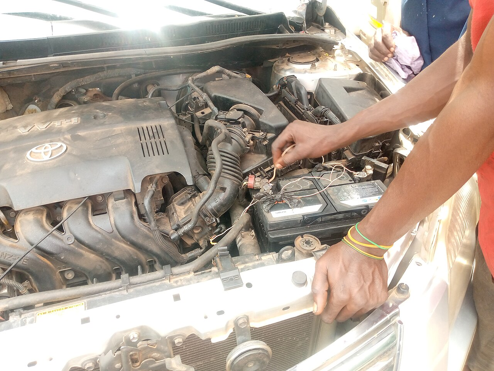

Battery Blankets and Cold Starts: What Actually Helps
A battery blanket helps on brutal mornings — but a weak battery is still a weak battery, blanket or not.

Photo: Azorbli, CC BY-SA 4.0, via Wikimedia Commons
A battery blanket keeps your battery warmer overnight — but it's not magic. What helps a cold start, and what's a waste of money.
Cold kills batteries. Everyone knows that. So the battery blanket sounds like the perfect fix: wrap the battery in a heated blanket, plug it in overnight, and wake up to a battery that's ready to go. It does help — on the right car, in the right cold, for the right reason. But a blanket is not a rescue for a dying battery, and it's not the most effective cold-start tool you can buy. Here's where it fits, and where it doesn't.
Why it's wrong
The mistake is treating a battery blanket as a fix for a weak battery. Cold slows the chemical reaction inside a battery, cutting its power — and a battery that was already weak in October will still be weak in January, blanket or not. A blanket on a dying battery just gives you a warm dying battery. The second mistake is expecting a blanket to do a block heater's job: a blanket warms the battery, but it does nothing for the thick, cold oil in the engine — and thick oil is half the reason cold engines are hard to start. The third mistake is a damaged blanket: a cracked or frayed heating pad wrapped around a battery is a fire risk, and blankets left plugged in for days on end waste power and age the battery faster.
The right way
- Test the battery first. Most auto parts stores test batteries free in about five minutes. If the battery is more than four or five years old, slow to crank, or fails the test, replace it — no blanket fixes that.
- Use a blanket for deep cold on a healthy battery. Below about -20°C, a battery blanket on a good battery genuinely helps: a warmer battery delivers more cranking power, and that's the difference between starting and not.
- Pair it with a block heater for the best result. The blanket warms the battery, the block heater warms the engine and oil. Together they cover both halves of a cold start. Put both on a timer for two to three hours before you leave.
- Install it properly. The blanket wraps around the battery with the heating side against the case, secured snugly — not loose, not bunched. Route the cord away from moving parts and hot surfaces, and plug into a ground-fault (GFCI) outlet.
- Inspect it every fall. Check the pad and cord for cracks, fraying, or corrosion before the season. Replace a damaged blanket — don't tape it and hope.
- Consider a trickle charger for a car that sits. If the car parks for days or weeks at a time, a trickle charger or battery maintainer keeps the battery topped up — which matters more than temperature for a parked car.
The rundown
Test the battery, replace it if it's weak, then add a blanket for deep cold — ideally paired with a block heater on a timer. A blanket is a helper for a healthy battery, not a rescue for a dying one. And if the car sits for long stretches, a trickle charger does more than any blanket will.
← Back to the battery care guide
Watch: Keeping that Battery Nice and WARM Temro ZEROstart Battery Blanket 80watt
🌡️ Check tomorrow morning FREE TOOL
Wondering if your battery will make it through the night? Will My Car Start Tomorrow? checks the overnight low and gives you an honest risk rating.